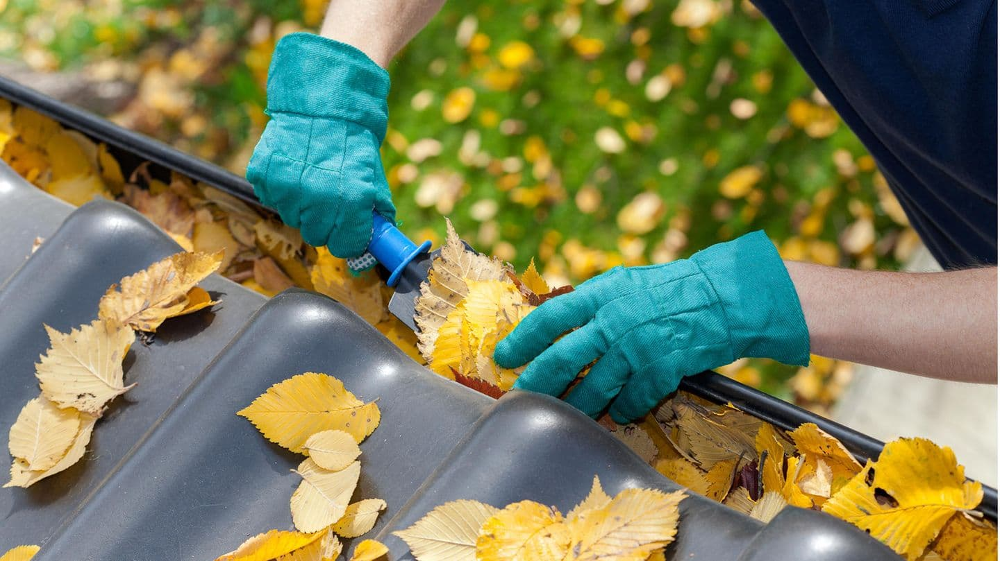
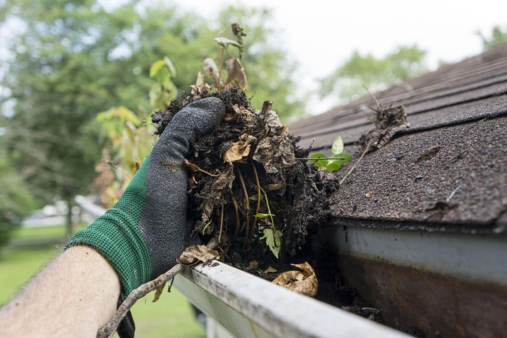
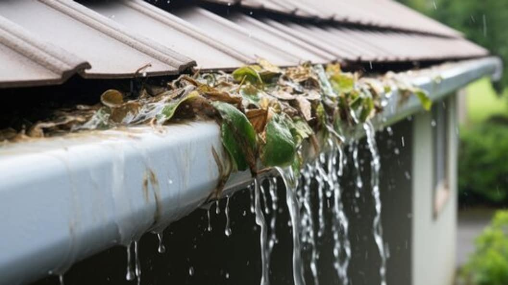
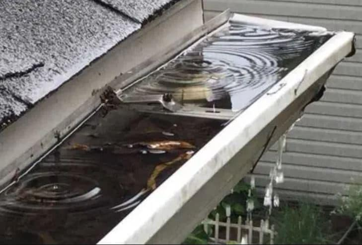
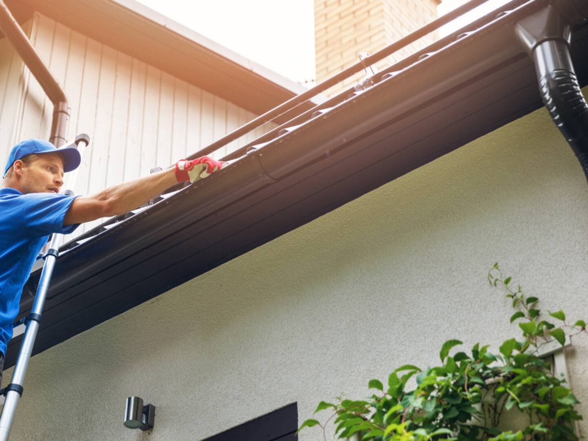
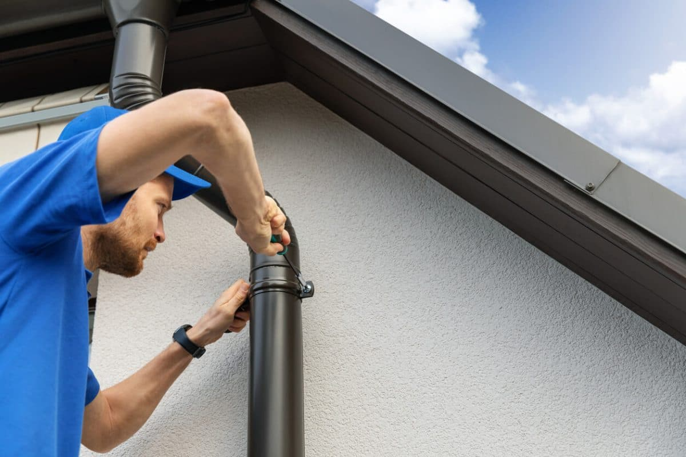

Reinigung und Kontrolle von Dachrinnen und Fallrohren.

Gründliche Entfernung von Laub, Schmutz und Ablagerungen aus den Dachrinnen.


Manuelle Beseitigung kleinerer Verstopfungen für reibungslosen Wasserabfluss.


Visuelle Inspektion zur Erkennung von Rissen, Löchern oder anderen Beschädigungen.
